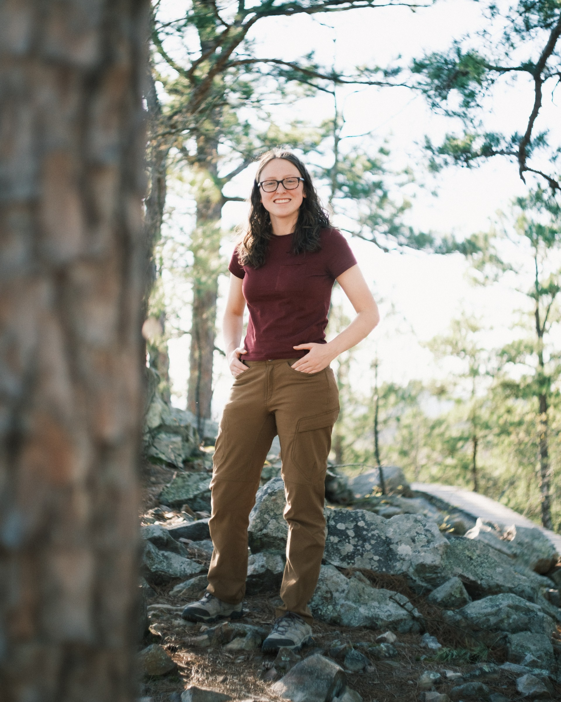

People
Lab members listed alphabetically by last name. Last updated: August 7, 2024.
| Paul Akpejeluh | PhD Student | pa024@uark.edu | Paul’s research interests include rangeland ecology, geospatial mapping, GIS, and remote sensing. He is joining the Living Landscapes Lab to pursue a PhD in Invasion Ecology focusing on developing a national-scale early detection and rapid response tool to predict spread of invasive plants using Cocongrass as focal species. He completed his MS in Applied Ecology at the University of Nebraska-Lincoln and his research focused on monitoring abandoned bomas (livestock enclosures) using multi-scale remote sensing data at multiple temporal resolutions to better understand vegetation dynamics with their surrounding landscapes. He is originally from Nigeria, where he holds a BS in Environmental Science. In his free time, he enjoys landscape and nature photography, watching sports and travelling. |

|
| Michael Ferrara | Master’s Student | mcf017@uark.edu | Michael will be studying how birds use solar panel arrays with understories of native grasses and forbes compared to those with turf grass. He is passionate about species and ecosystem conservation. His primary research interests are in population dynamics, interspecies interactions and habitat use to protect species of concern. Michael received his B.S. from SUNY College of Environmental Science and Forestry and since then has been working with avian species across the eastern United States. He is originally from Long Island, New York and in his free time, he enjoys hiking, birding, photography, traveling, cooking, playing video games and watching sports. |

|
| Vinita Karki | PhD Student | vkarki@uark.edu | My research interests encompass ecological modeling, geospatial mapping, and the conservation and management of avian species. I will join the Living Landscape lab to pursue a PhD. My dissertation research will be to create a comprehensive statewide decision support tool for wild turkey conservation efforts in Arkansas. Ultimately, by pinpointing the areas where our efforts can have the most positive impact on turkey populations in Arkansas, we can make a substantial contribution to their management. I did my master’s in Biological Sciences from Fort Hays State University, and my thesis used Motus Wildlife Tracking Network to estimate population size and understand fine-scale local movements of migratory birds in the Cheyenne Bottoms, KS. In addition to my research pursuits, I enjoy backpacking, hiking/trekking, and bird watching. Having grown up in a mountainous region, I eagerly anticipate the opportunity to delve into the rugged beauty of the Ozarks mountains. |

|
| Lindsey LaBrie | PhD Student | llabrie@uark.edu | Lindsey is interested in invasive species ecology of riverine ecosystems, especially in the context of climate change. In the Living Landscapes Lab, she will be researching differences in invasive species management policies across the country, determining invasion potential for various aquatic nuisance species throughout the state of Arkansas, and estimating future invasion risks using climate change models and horizon mapping techniques. She completed her M.S. in Biology at the University of South Dakota in May 2023. She received a B.S. in Fisheries & Wildlife and a B.A. in German Language & Literature from the University of Nebraska-Lincoln in May 2020. Lindsey is originally from Hastings, Nebraska. When she’s not on the river or thinking about fish, you’ll find her drinking coffee, gardening, painting, cooking, rollerblading, camping, indoor rock climbing, or snuggling with her cat Jinx. |

|
| Lauren Luther | Undergrad Student | leluther@uark.edu | Lauren is an undergraduate student at the University of Arkansas who is joining the Living Landscapes lab while she completes her honors undergraduate research requirements for her B.S. in biology. She will be working with Michael Ferrara in his studies of bird use of solar arrays, specifically on optimizing the audio recording devices utilized in the study. Lauren has completed a research project in Jamestown, CO, through the Ecosystem Field Studies course studying the effect of pitch on coloration in Ponderosa pines. Originally from central Arkansas, Lauren enjoys spending her free time hiking with her dog, canoeing, and performing with the Razorback Marching Band. |  |
| Caleb Roberts | PI | cr065@uark.edu | Caleb is the leader of the Living Landscapes Lab. He works for the U.S. Geological Survey as the Unit Leader of the Arkansas Cooperative Fish & Wildlife Research Unit. Caleb’s research interests include ecological resilience, grasslands, landscape ecology, fire, birds, invasive species, plants, community ecology, agroecosystems, complexity theory, and rangelands. Caleb is from western Kentucky, and he enjoys writing, running, reading, cooking, gardening, board games, hiking, and hanging out with his wife, daughter, and cat. |

|
| Ken Wilson | Master’s Student | kw101@uark.edu | Ken’s research is focused on ground and shrub nesting birds in Southern Arkansas, and how they are impacted by the presence of feral hogs. Using camera traps, point count surveys, and vegetation surveys, Ken will measure the diversity and occupancy of breeding birds in bottomland hardwood floodplains and upland pine forests and how this is related to the density of feral hogs. This study will help us better understand how to manage a highly invasive species to protect vulnerable bird populations. Ken has previously worked for federal and state wildlife agencies studying secretive wetland birds, ground-nesting warblers, and pygmy owls, among other avian species. Ken is from New Jersey and in his free time, he enjoys reading, hiking, martial arts, and spending time with his cat. |